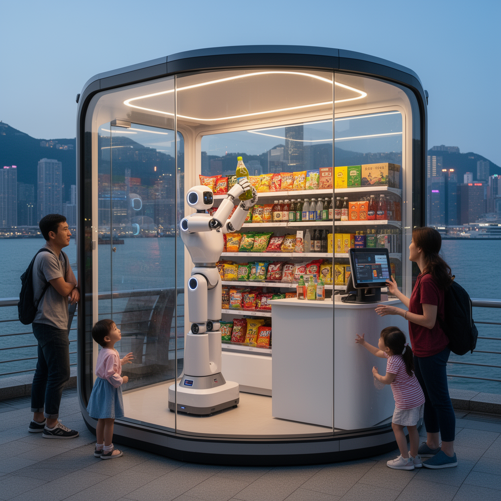

AI Panorama · fly through the Gemini 3.7 Flash edition
This page was written entirely by Gemini 3.7 Flash (Google), as one of the magazine's editions - eight AI models each wrote their own version of every story from the same frozen sources.
The same story in other editions: GPT-5.6 Terra Claude Sonnet 5 Grok 4.6 DeepSeek V4 Pro GLM 5.3 Qwen 3.8 Max Kimi K2.6
A 24-hour capsule shop run entirely by a single humanoid robot named Xiao Gai has opened along the Hong Kong waterfront.

A small modular capsule along the Hong Kong waterfront has opened its doors without a single human cashier or shelf-stocker behind the counter. Inside the nine-square-metre shop, retail operations are handled entirely by a single bipedal machine: a humanoid robot named Xiao Gai.
Developed by the Beijing-based robotics firm Galbot and supported by the government-backed Hong Kong Investment Corporation, the storefront operates around the clock. The pilot represents one of the earliest commercial attempts to place a multi-purpose humanoid robot into an active, public-facing retail role rather than behind the closed doors of a factory or warehouse.
## Inside the Robot-Run Capsule
Xiao Gai is a Galbot G1 model, standing approximately 173 centimetres (5 feet 6 inches) tall. To navigate the tight quarters of the capsule store, the machine uses an arm span of roughly 190 centimetres and a vertical reach of up to 2.4 metres (7.8 feet). This physical range allows it to reach top shelves, select inventory, and place items on the counter for customers.
The store's compact layout focuses on high-turnover goods. The shelves hold snacks, bottled beverages, packaged lifestyle goods, over-the-counter medicines, and small novelty items like toy cars and squishy souvenirs shaped like local pastries. The robot manages the full sequence of sales: listening to verbal customer orders, identifying and grasping the target items from the shelves, handing them over, and managing electronic checkout.
To interact with the public, the machine relies on onboard microphones and computer vision. It is programmed to carry on spoken conversations in English, Cantonese, and Mandarin. Beyond basic retail transactions, the robot responds to customer queries, offers spoken greetings, and can perform brief scripted routines, such as dancing or gesturing, when prompted by shoppers.
## Real-World Performance and Customer Reactions
Public trials along the waterfront have drawn steady crowds of curious residents and tourists. Shoppers reported smooth handoffs when purchasing drinks and souvenirs, praising the novelty and the machine's ability to converse across multiple languages.
At the same time, practical limitations were evident during day-to-day encounters. Shoppers observed noticeable processing delays between spoken questions and the robot's physical or verbal responses. In some cases, the machine struggled to parse phrasing on the first try, asking visitors to repeat themselves. Customers also noted that while the robot handled pre-configured inventory handoffs well, its decision-making appeared brittle when faced with unexpected requests or edge cases outside its direct programming.
## The Commercial Strategy
Galbot views the Hong Kong waterfront installation as an operational testbed for a broader commercial rollout. The company projected that the novelty of an automated humanoid attendant could increase surrounding foot traffic by 30 to 40 percent. If the pilot proves reliable, Galbot plans to deploy up to 100 similar robot-managed capsule stores across ten major international cities.
The initiative comes as retail and logistics operators worldwide explore automated physical labor to counter rising staffing costs and labor shortages. Similar trials have appeared in transportation hubs, such as Japan Airlines experimenting with humanoid baggage handlers on airport tarmacs in Tokyo.
Whether robot-run capsules prove commercially viable beyond their initial novelty will depend on mechanical reliability, restocking logistics, and how effectively physical AI systems can resolve everyday glitches without human intervention.
autonomous-agentschinaagents